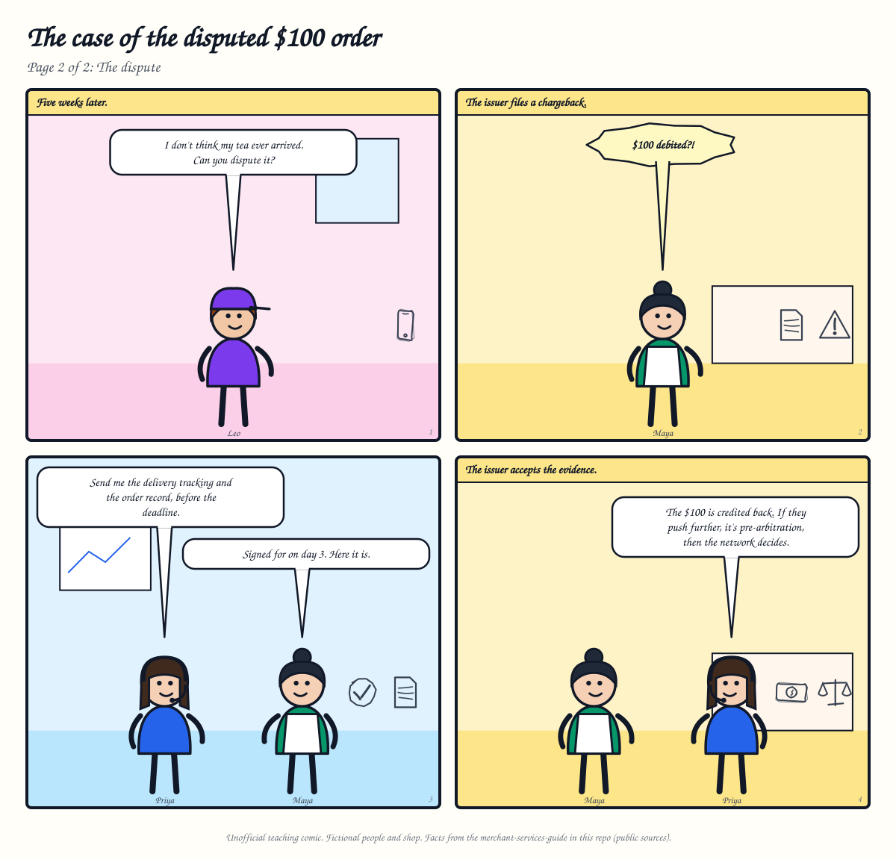

The case of the disputed $100 order
One online sale, followed from checkout to a chargeback and back. An unofficial teaching comic built from public sources.


What each panel teaches
- 1.1 Checkout: the shopper's card or wallet details go to the merchant's gateway.
- 1.2 Authorization asks the issuer to stand behind the amount. No money moves yet.
- 1.3 Capture and batch close turn the auth into a deposit the acquirer settles through the networks.
- 1.4 Funding: the acquirer pays the merchant the net amount on the agreed schedule.
- 2.1 The cardholder disputes with the issuer, not with the merchant's acquirer.
- 2.2 A first chargeback debits the merchant through the acquirer right away.
- 2.3 Representment: the merchant answers with evidence, sent through the acquirer by the network's deadline.
- 2.4 If representment wins, the money comes back; otherwise the case can go to pre-arbitration and arbitration.
Unofficial teaching comic. Fictional people and shop. Facts from the merchant-services-guide in this repo (public sources).